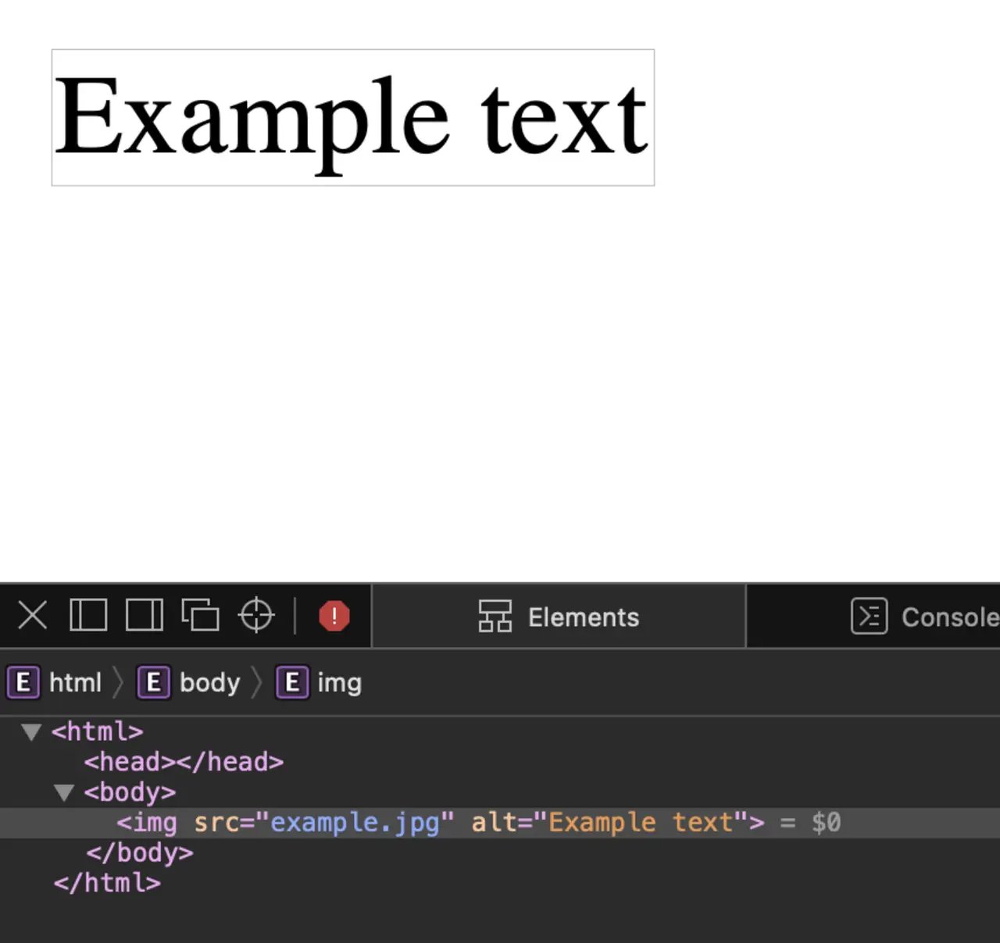

短答
Alt 文字是图片未被看见时代替它的词语。
有信息量的产品照片需要用页面的语言描述它显示了什么。装饰性的线或间隔可以用空的 alt，以免被宣称为内容。“IMG_2044”这种文件名两者都不是。SEO 健康把信息性图片缺少 alt 当作页面基础，把误导性的 alt 当作更糟的缺陷，因为它陈述了错误的东西。
定义
Alt 不是重复关键词列表的地方。关键词列表不是图片描绘的东西。本页的图显示文字代替图片，这就是这个概念。它不是评分量表。同一张图用在英文页和中文页时，需要该页语言的 alt，而不是两边都抄同一句英文。
页面基础里包括什么
用页面语言描述信息性图片，装饰性图片使用空的 alt，并且永不使用文件名。
宽高仍然是另一项基础，以免图片移动布局。Alt 不预留盒子，预留的盒子也不描述图片。把每张图的 alt 设成 title 属性的模板，会复制一个糟糕的标题。在选定图片的地方写描述。

要检查什么
- 信息性图片用页面语言描述
- 装饰性图片使用空的 alt
- 文件名和“image”一词不用作 alt
- 英文页和中文页不共用一种语言的 alt
- 宽高作为另一项基础来检查
一个结构示例
一张阀门照片的 alt 是“image”，中文页用了同一个英文词。修复是把英文 alt 写成阀门系列和视角，中文 alt 用中文写同一事实。旁边的图标是装饰，使用空的 alt。两个值都不是 SKU 文件名。
它不声称什么
Alt 文字不保证排名或引用。
Mika Visibility 把它归到哪里
Mika Visibility 把标题、标题层级、语言和媒体基础归在 SEO 健康的内容与结构检查里。它们帮助页面被理解。它们不是 SEO 增长——增长问的是还缺什么覆盖——它们也不保证回答产品会引用这个页面。
示例图显示文字代替图片，这正是该属性的用途。
常见问题
Alt 文字是用来做什么的？
Alt 文字是图片未被看见时代替它的词语。
信息性图片应该说什么？
用页面语言描述信息性图片，装饰性图片使用空的 alt，并且永不使用文件名。
Alt 文字能保证排名吗？
Alt 文字不保证排名或引用。
下一步
做一次结构化的 SEO + GEO 审计，查看健康发现、增长缺口和可以执行的蓝图。
更清晰的实体、答案、证据和上下文，会让页面更容易被理解与引用。任何回答产品中的结果都不作保证。